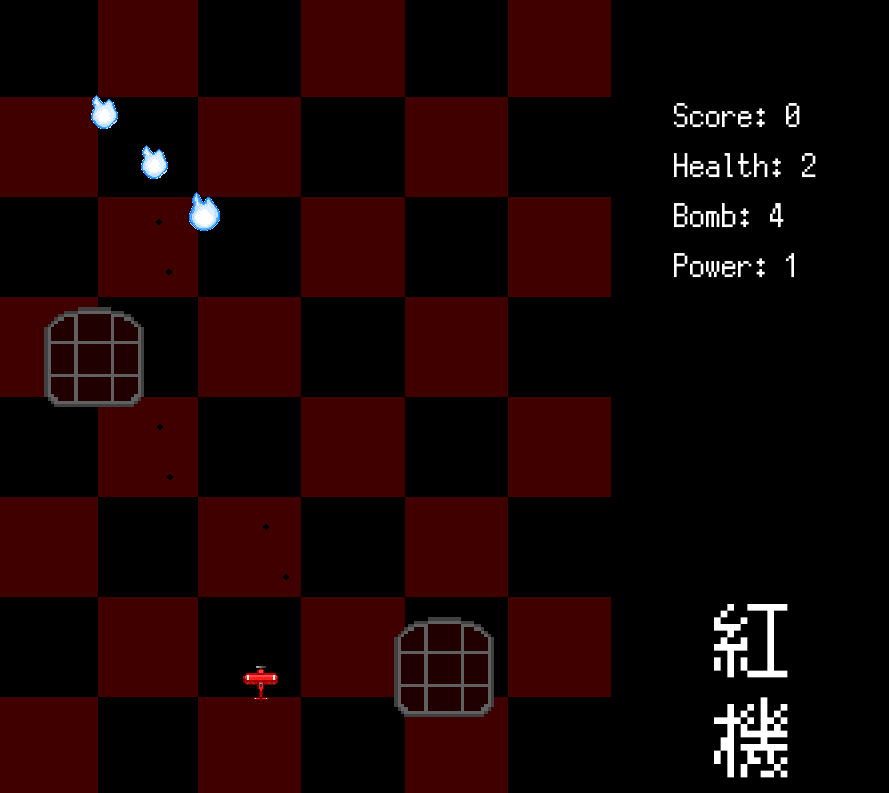

Welcome to Neural Ghostline † 502 Web site ! This is about the works page
◆ MENU ◆
トップ
メンバー紹介
作品紹介
イベント参加録
◆ 作品紹介 ◆
ジャンル：
縦スクロールSTG
特徴：
固定パターン弾幕 / ボムシステム / ストーリー
想定：
STG初心者向け
◆ スクリーンショット ◆

◆ 体験版 ◆
▶ 紅機 体験版ダウンロード（ZIP）